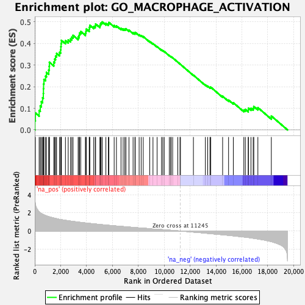
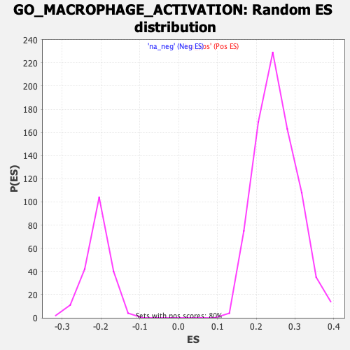

| | | Dataset | Recurrence |
| Phenotype | NoPhenotypeAvailable |
| Upregulated in class | na_pos |
| GeneSet | GO_MACROPHAGE_ACTIVATION |
| Enrichment Score (ES) | 0.49943194 |
| Normalized Enrichment Score (NES) | 1.9792095 |
| Nominal p-value | 0.0 |
| FDR q-value | 0.028240893 |
| FWER p-Value | 0.392 |
Table: GSEA Results Summary

Fig 1: Enrichment plot: GO_MACROPHAGE_ACTIVATION
Profile of the Running ES Score & Positions of GeneSet Members on the Rank Ordered List
| SYMBOL | RANK IN GENE LIST | RANK METRIC SCORE | RUNNING ES | CORE ENRICHMENT | | 1 | CD74 | 11 | 3.513 | 0.0432 | Yes |
| 2 | TLR8 | 45 | 2.965 | 0.0785 | Yes |
| 3 | FOXP1 | 337 | 2.114 | 0.0899 | Yes |
| 4 | LRRK2 | 426 | 2.015 | 0.1105 | Yes |
| 5 | TLR4 | 508 | 1.926 | 0.1303 | Yes |
| 6 | IL4R | 603 | 1.855 | 0.1486 | Yes |
| 7 | FCGR2B | 661 | 1.822 | 0.1684 | Yes |
| 8 | TLR1 | 670 | 1.816 | 0.1906 | Yes |
| 9 | JUN | 682 | 1.806 | 0.2126 | Yes |
| 10 | CLU | 709 | 1.785 | 0.2335 | Yes |
| 11 | TLR6 | 833 | 1.705 | 0.2484 | Yes |
| 12 | PTPRC | 902 | 1.670 | 0.2658 | Yes |
| 13 | SNCA | 1077 | 1.581 | 0.2765 | Yes |
| 14 | TNIP2 | 1118 | 1.568 | 0.2940 | Yes |
| 15 | NAMPT | 1130 | 1.562 | 0.3129 | Yes |
| 16 | AGER | 1468 | 1.433 | 0.3135 | Yes |
| 17 | AIF1 | 1538 | 1.405 | 0.3274 | Yes |
| 18 | CST7 | 1606 | 1.384 | 0.3412 | Yes |
| 19 | ZC3H12A | 1685 | 1.358 | 0.3541 | Yes |
| 20 | PRKCE | 1909 | 1.287 | 0.3587 | Yes |
| 21 | CCL3 | 1998 | 1.266 | 0.3700 | Yes |
| 22 | CTSC | 2014 | 1.263 | 0.3849 | Yes |
| 23 | PLA2G4A | 2035 | 1.257 | 0.3996 | Yes |
| 24 | CEBPA | 2059 | 1.251 | 0.4140 | Yes |
| 25 | NR1H3 | 2370 | 1.178 | 0.4127 | Yes |
| 26 | CX3CL1 | 2583 | 1.134 | 0.4160 | Yes |
| 27 | STAP1 | 2762 | 1.096 | 0.4205 | Yes |
| 28 | LDLR | 2862 | 1.076 | 0.4288 | Yes |
| 29 | THBS1 | 2957 | 1.058 | 0.4371 | Yes |
| 30 | SBNO2 | 3349 | 0.986 | 0.4293 | Yes |
| 31 | DYSF | 3429 | 0.971 | 0.4374 | Yes |
| 32 | C1QA | 3457 | 0.965 | 0.4480 | Yes |
| 33 | TREM2 | 3553 | 0.949 | 0.4550 | Yes |
| 34 | SHPK | 3911 | 0.888 | 0.4477 | Yes |
| 35 | EDN2 | 3955 | 0.881 | 0.4564 | Yes |
| 36 | SUCNR1 | 3978 | 0.878 | 0.4662 | Yes |
| 37 | IFNGR1 | 4208 | 0.843 | 0.4650 | Yes |
| 38 | VSIG4 | 4222 | 0.840 | 0.4748 | Yes |
| 39 | WNT5A | 4255 | 0.835 | 0.4835 | Yes |
| 40 | ATM | 4556 | 0.792 | 0.4780 | Yes |
| 41 | TLR7 | 4674 | 0.775 | 0.4816 | Yes |
| 42 | MFHAS1 | 4701 | 0.772 | 0.4899 | Yes |
| 43 | TMEM106A | 5033 | 0.720 | 0.4818 | Yes |
| 44 | TRPV1 | 5064 | 0.717 | 0.4892 | Yes |
| 45 | JAK2 | 5122 | 0.708 | 0.4951 | Yes |
| 46 | CRTC3 | 5208 | 0.695 | 0.4994 | Yes |
| 47 | IL1RL1 | 5494 | 0.657 | 0.4930 | No |
| 48 | CD200 | 5688 | 0.633 | 0.4909 | No |
| 49 | SYK | 5725 | 0.628 | 0.4969 | No |
| 50 | LBP | 6134 | 0.576 | 0.4831 | No |
| 51 | BPI | 6309 | 0.554 | 0.4810 | No |
| 52 | MAPT | 6662 | 0.514 | 0.4693 | No |
| 53 | IL13 | 6829 | 0.494 | 0.4669 | No |
| 54 | TICAM1 | 6955 | 0.477 | 0.4665 | No |
| 55 | TYROBP | 7043 | 0.464 | 0.4678 | No |
| 56 | FER1L5 | 7277 | 0.438 | 0.4612 | No |
| 57 | SPHK1 | 7595 | 0.400 | 0.4499 | No |
| 58 | SYT11 | 7739 | 0.383 | 0.4473 | No |
| 59 | ITGAM | 7763 | 0.380 | 0.4509 | No |
| 60 | HSPD1 | 8063 | 0.347 | 0.4398 | No |
| 61 | ITGB2 | 8220 | 0.329 | 0.4359 | No |
| 62 | GRN | 8379 | 0.312 | 0.4316 | No |
| 63 | SPACA3 | 8884 | 0.260 | 0.4090 | No |
| 64 | C5AR1 | 9133 | 0.232 | 0.3991 | No |
| 65 | CSF2 | 9452 | 0.198 | 0.3852 | No |
| 66 | JMJD6 | 9793 | 0.161 | 0.3697 | No |
| 67 | TTBK1 | 9896 | 0.151 | 0.3663 | No |
| 68 | MIF | 10003 | 0.139 | 0.3626 | No |
| 69 | TNF | 10392 | 0.096 | 0.3438 | No |
| 70 | LRFN5 | 10504 | 0.084 | 0.3392 | No |
| 71 | CD93 | 10531 | 0.081 | 0.3388 | No |
| 72 | NR1D1 | 10652 | 0.067 | 0.3335 | No |
| 73 | AZU1 | 11050 | 0.022 | 0.3134 | No |
| 74 | IL10 | 11221 | 0.003 | 0.3046 | No |
| 75 | ADGRF5 | 11255 | -0.001 | 0.3030 | No |
| 76 | PLA2G10 | 12257 | -0.119 | 0.2529 | No |
| 77 | IL33 | 13180 | -0.235 | 0.2084 | No |
| 78 | FPR2 | 13360 | -0.260 | 0.2025 | No |
| 79 | IL4 | 13533 | -0.284 | 0.1972 | No |
| 80 | MMP8 | 13595 | -0.292 | 0.1977 | No |
| 81 | SLC11A1 | 14513 | -0.410 | 0.1556 | No |
| 82 | IL6 | 14972 | -0.474 | 0.1379 | No |
| 83 | RORA | 15339 | -0.529 | 0.1257 | No |
| 84 | GPR137B | 16152 | -0.656 | 0.0921 | No |
| 85 | IFNG | 16267 | -0.675 | 0.0946 | No |
| 86 | IL31RA | 16491 | -0.714 | 0.0921 | No |
| 87 | TLR3 | 16507 | -0.717 | 0.1002 | No |
| 88 | SLC7A2 | 16702 | -0.755 | 0.0997 | No |
| 89 | APP | 16874 | -0.792 | 0.1007 | No |
| 90 | PJA2 | 16922 | -0.802 | 0.1083 | No |
| 91 | HAVCR2 | 17237 | -0.875 | 0.1031 | No |
| 92 | TLR2 | 18276 | -1.168 | 0.0642 | No |
Table: GSEA details [plain text format]

Fig 2: GO_MACROPHAGE_ACTIVATION: Random ES distribution
Gene set null distribution of ES for GO_MACROPHAGE_ACTIVATION